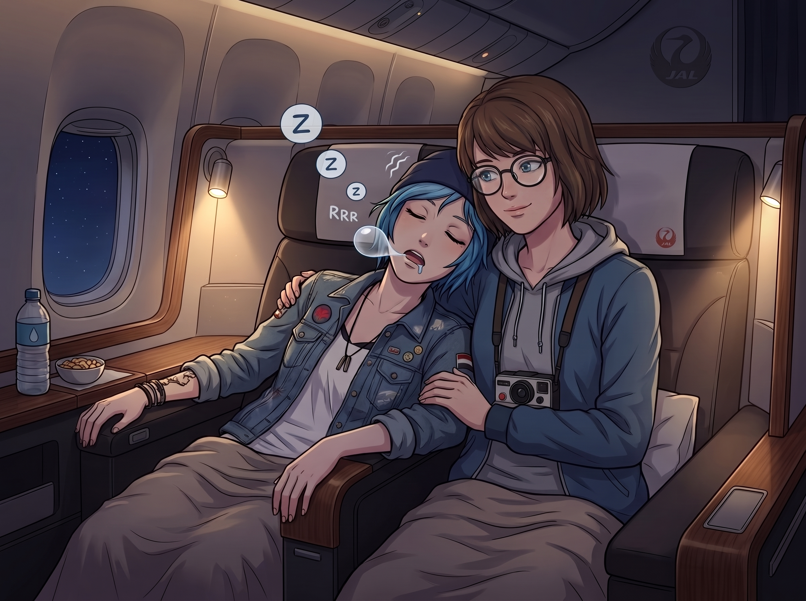
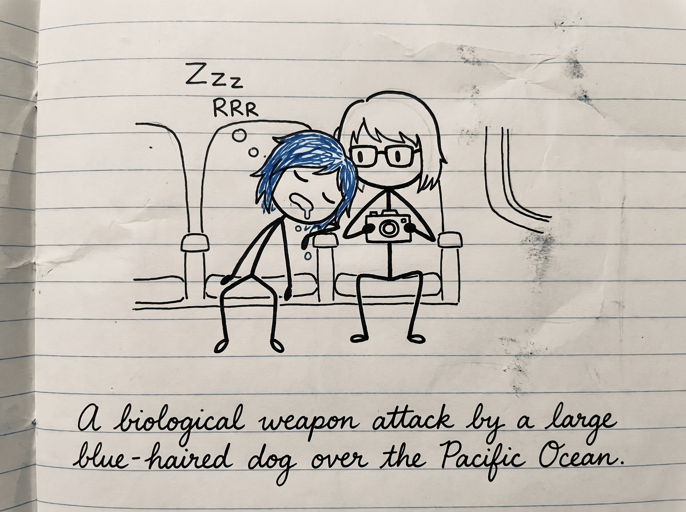

死無對證


一、Max 的海關申報手帳時間
日航頭等艙的燈光已經調暗，平穩的引擎轟鳴聲成了最好的催眠曲。
幾乎是在飛機爬升到巡航高度、安全帶指示燈熄滅的第三秒，Chloe Price 的大腦就執行了強制關機程序。她那顆頂著藍色亂髮的腦袋，像一顆失去重力的保齡球，「砰」地一下重重砸在了 Max 的右肩上。
不到半分鐘，一陣均勻且帶有輕微震動的鼾聲就在 Max 耳邊響起。Chloe 睡得像一具沒有靈魂的機修工屍體，四肢以一種極其佔用空間的霸道姿勢舒展著，而她的嘴角，正懸著一滴即將突破表面張力、朝著 Max 灰色連帽衫墜落的可疑口水。
Max 無奈地嘆了口氣，熟練地從隨身包裡抽出一張衛生紙，墊在自己的肩膀和 Chloe 的嘴巴之間。她沒有叫醒這個扛了一整天設備和原箱卡牌的藍領苦力，而是打開了座位上方微弱的閱讀燈，在腿上攤開了她的專屬手帳本，把幾個小時前那場成田機場核爆事件用 Q 版火柴人記錄下來。
畫完最後一筆，Max 看著手帳上這群荒誕又無比鮮活的同伴，忍不住在昏暗的機艙裡無聲地笑了起來。
她轉過頭，看了一眼隔壁的獨立座艙。Victoria 已經戴上了昂貴的真絲眼罩，但眉頭依然因為之前的龍貓暴露事件而微微皺著；而前排的 Kate，則蓋著兩層毛毯，睡得像一尊安詳的壁畫。
Max 輕輕合上手帳，把它塞回椅背口袋，然後小心翼翼地調整了一下坐姿，讓肩膀上的那顆藍色腦袋能靠得更舒服一點。她順手把 Chloe 嘴角那滴終於掉下來的口水連同衛生紙一起精準地扔進垃圾袋，關掉了閱讀燈。
「晚安，怪胎們。準備好回海灣面對現實的海風吧。」Max 小聲嘟囔了一句，閉上眼睛，在太平洋上空的平流層裡沉沉睡去。
二、死無對證的極限拉扯
「叮咚——」
伴隨著機艙內燈光逐漸調亮，廣播裡傳來了空服員溫柔的聲音：「各位旅客，飛機已經開始下降，即將抵達西雅圖-塔科馬國際機場……」
這個廣播彷彿是某種設定好的生物鐘開關。前一秒還像具屍體一樣死死壓在 Max 肩膀上的 Chloe，下一秒竟然奇蹟般地猛然彈了起來，雙眼瞬間睜開，完成了從深度昏迷到滿血復活的無縫切換。
她下意識地用手背猛擦了一下嘴角，然後心虛地轉過頭。
Max 已經收起了手帳，正用一種極其平靜、甚至帶著幾分慈祥的眼神看著她。而在 Max 灰色連帽衫的右肩上，有一塊大約直徑五公分、邊緣呈現不規則水漬狀的深色圓斑，在機艙的燈光下顯得格外刺眼。
「早安，睡美人。」Max 推了推滑落的黑框眼鏡，語氣不急不徐，「夢到在秋葉原吃免錢的特大碗拉麵了嗎？」
Chloe 的目光死死盯著那塊水漬，大腦裡的危機處理系統瞬間飆到了極限。她清了清嗓子，強行擺出一副街頭惡霸的囂張嘴臉：「哈？少來這套，Caulfield。老娘可是硬核機械師，我的身體構造只會分泌機油和腎上腺素，絕對不可能流出那種像法鬥犬一樣的液體！」
「是嗎？」Max 指了指自己的肩膀，「那妳要怎麼解釋這片太平洋西北地區的局部降雨？」
「這是……這是機艙冷凝水！」Chloe 開始了她毫無邏輯的物理學狡辯，雙手在空中亂比劃，「對，肯定是飛機下降時海拔高度變化太大，冷氣管線凝結的水滴好巧不巧地砸在了妳的肩膀上！不信妳問物理學家！」
「機艙冷凝水會帶著一股淡淡的薄荷泡泡糖味嗎？」Max 嘆了口氣，「我甚至還拿衛生紙幫妳墊了半個小時，免得妳把我的衣服徹底淹沒。」
Chloe 一聽這話，敏銳地抓住了漏洞，立刻挺直了腰板，像個抓住檢方把柄的流氓律師：「衛生紙呢？拿出來啊！證物在哪裡？！」
「空服員收垃圾的時候我順手扔了。」
「哈！死無對證！」Chloe 得意地往椅背上一靠，雙臂抱胸，臉上寫滿了小人得志的猖狂，「沒有照片，沒有紙巾！Maxine，在法庭上這叫缺乏實質證據的惡意誹謗！妳拿什麼證明那是我弄的？搞不好是妳自己看著我完美的側臉，激動得流下了感動的淚水呢！」
面對這種無賴行徑，Max 默默地從椅背口袋裡抽出了那本手帳，翻到了最後一頁，展示給 Chloe 看。上面畫著一個頭頂長著藍色亂草的火柴人，正趴在另一個戴眼鏡的火柴人肩上，嘴裡還誇張地掛著一條瀑布般的波浪線，旁邊標註著「太平洋上空，某隻藍毛大型犬的生化武器襲擊」。
「就這？」Chloe 差點笑出聲，伸出一根手指戳了戳那個火柴人，「這算什麼證據？這是印象派抽象畫！這是妳身為攝影師因為沒有底片而產生的報復性心理投射！我不認罪！」
三、雙重夾擊的判決
就在這對青梅竹馬為了一灘口水進行極限拉扯時，隔壁座位的擋板突然被不耐煩地拉下了。
Victoria 已經摘下了真絲眼罩，正拿著一面補妝鏡檢查自己的口紅。名媛連看都懶得看她們一眼，用極其冷酷且充滿厭世感的聲音下了最後的判決：
「Price，妳那如同柴油發動機故障般的打呼聲，在過去的三個小時裡，甚至穿透了我這副降噪耳機。還有，妳睡著時不僅流口水，甚至還砸吧著嘴喊了一句『大富婆別碰我的卡』。」
Victoria 啪地一聲合上化妝鏡，轉過頭，給了 Chloe 一個輕蔑的冷笑：「Caulfield 沒拍照是妳這輩子最大的幸運。現在，把妳那張掛著眼屎的臉轉過去，飛機要落地了。」
前排的 Kate 剛好醒來，迷迷糊糊地探出半個頭，看著滿臉通紅、被堵得啞口無言的 Chloe，溫柔地遞過來一包濕紙巾：「Chloe，妳的下巴……好像還有點亮亮的喔。」
在殘酷的人證物證，以及名媛和天使的雙重夾擊下，藍髮機械師的嘴硬防線徹底土崩瓦解。她一把抓過濕紙巾，把臉埋在連帽衫裡，發出了一聲生無可戀的悲鳴。而 Max 則笑得肩膀直抖，那塊帶著薄荷味的口水漬，就這樣成為了這趟東京之旅最完美的返程勳章。